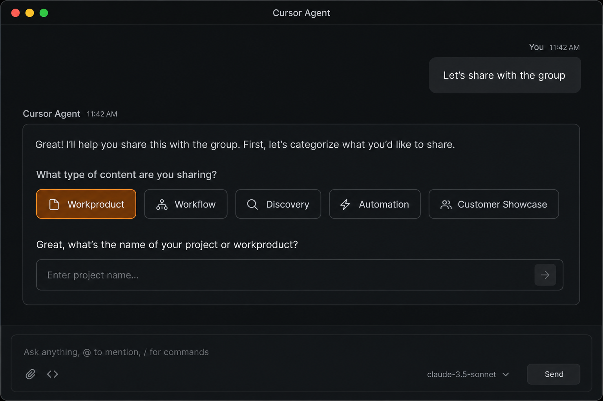
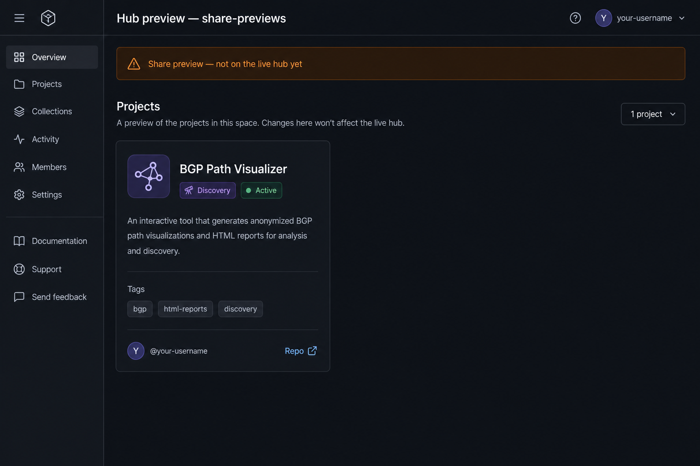

BGP Path Visualizer
active
Builds anonymized BGP path HTML reports from ThousandEyes test data for executive readouts.
GES & ASP SE Hub · Onboarding
Agent-guided workflow for publishing projects to the team hub. Trigger with Let's share with the group in Cursor or Claude. Samples below show representative agent output at each phase.
Clone once, open as workspace root, skills load automatically in Cursor.
git clone https://github.com/BaroldBonds12/ThousandEyes_GES_ASP_SE.git.cursor/skills/share-with-group/CLAUDE.md at repo root.ThousandEyes_GES_ASP_SE/ — not a parent monorepo — so skills resolve correctly.Screenshot 1 — Expected repo layout after clone
New Agent chat → trigger phrase → category intake.
projects/) or link-only.Screenshot 2 — Phase 1: category + project name intake

Public-safe summary — what it does and what problem it solves.
Screenshot 3 — Phase 3: scope summary before mockup
HTML preview in docs/share-previews/ — review before anything goes live.
Builds anonymized BGP path HTML reports from ThousandEyes test data for executive readouts.
Screenshot 4 — Phase 4: catalog card preview (sample)

docs/share-previews/bgp-path-visualizer-preview.htmlcd docs/share-previews && python3 -m http.server 8080Screenshot 5 — Phase 5–6: iteration then publish approval
After merge, post Discussion + share to GES ASP Webex space.
## Summary
Builds anonymized BGP path HTML from TE tests…
## Links
Hub · Repo · Demo
Screenshot 6a — Discussion draft
Screenshot 6b — Webex copy-paste block